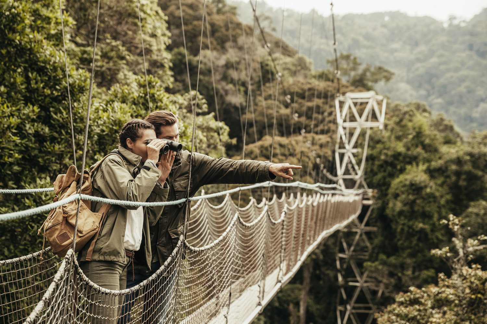
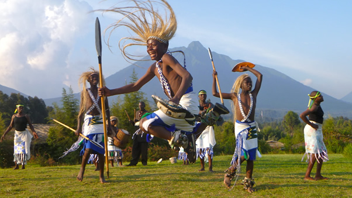

Canopy Walkway
This is canopy walkway in Nyungwe forest which is one of the most outstanding tourist's activities in Rwanda.
visiting the western provence Rwanda's Nyungwe forest is so scenic with the lush hills and tea plantations.
Suspended above a ravine in the lush montane rainforest of Nyungwe National
Park, the canopy walkway provides an exhilarating perspective on the ancient treetops and wildlife.
The 160m long and 70m high suspension bridge is accessible as part of a guided tour along the
Igishigishigi trail, or to those hiking the Imbaraga or Umuyove trails.
Having escaped the last ice age, the Nyungwe forest is a hotbed of biodiversity. Along the hour’s
walk to the canopy walkway from the Uwinka Reception Centre, visitors will see countless butterflies,
orchids and colourful birds, including many endemic to the region.Thirteen species of primate live in Nyungwe, so a chance encounter isn’t out of the question,
although those wishing to seek them out should opt for a dedicated primate visit.
Here you can see some of our culture
Rwandans share cultural values notably unity, patriotism, social cohesion, resilience, hard work
among others, with Kinyarwanda being the common language, spoken in all parts the country. Other
official languages are English, French and Kiswahili.


Rwandan Culture and Traditions
Intore Dancing
The finest displays of Rwanda’s dynamic traditional musical and dance styles are performed by the
Intore Dance Troupes. Founded several centuries ago, the Intore, (The Chosen Ones) who performed
exclusively for the Royal Court, were given military training and taught the technique of jumping
which forms a significant part of the dance. Performed wearing grass wigs and clutching spears this
dance is a true spectacle of Rwanda.
Live dance performances can be seen at cultural villages, museums and as entertainment at many lodges and hotels across Rwanda.
The Gorilla Guardians village in Musanze, and the National Museum of Rwanda have regular performances.
Why do people visit Rwanda?
Top 10 Trip Reasons For A Vacation Visit To Rwanda ...
Mountain gorilla trekking, birdwatching, classic game drives, nature walks, cultural experiences,
hiking, and lakeside relaxation—these are just some of the ways to spend your vacation in Rwanda.
The country has experienced a dynamic transformation since the tragic genocide that took place in 1994.